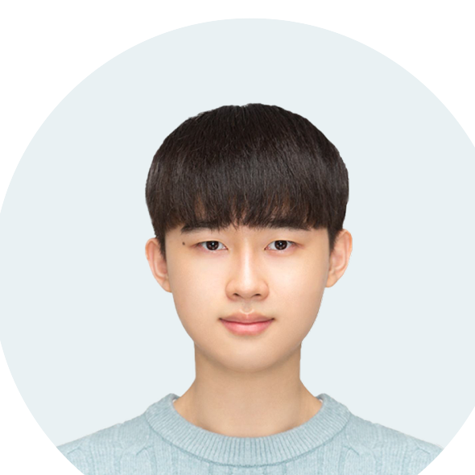

Resume
정시원
백엔드 엔지니어
- GitHub
- github.com/siwony
- Blog
- blog.siwony.xyz
- Phone
- 010-3629-3839
자기소개
안녕하세요. 3년차 백엔드 엔지니어 정시원입니다.
Kotlin/Java 기반 Spring Boot 애플리케이션을 중심으로 온프레미스 및 클라우드 환경에서 백엔드 개발을 수행해왔습니다. 소켓 통신 기반 연동, HTTP API 개발, 운영 자동화, 레거시 개선, 장애 대응 등 서비스 운영과 밀접한 업무를 경험했습니다.
저는 단순 구현보다 운영 과정에서 발생하는 병목과 비효율을 줄이는 데 관심이 많습니다. 스토리지 네트워크 경로 개선으로 파일 처리 성능을 약 2~3배 향상시키고, 슬로우 쿼리 튜닝으로 조회 응답 시간을 3초에서 0.1초 수준으로 단축한 경험이 있습니다. 또한 APM 기반 서버 메트릭 보고 업무를 자동화하여 매일 약 1시간 걸리던 작업을 약 10분 수준으로 줄였습니다.
운영 환경을 이해하고, 레거시를 점진적으로 개선하며, 유지보수 가능한 구조를 설계하는 백엔드 엔지니어로 성장하고 있습니다.
대표 경험
-
NCDS 스토리지 병목 개선 - 네오컨버전스
CIFS 마운트 경로를 공인망(1Gbps)에서 사설망(10Gbps)으로 전환하여 파일 처리 성능을 약 2~3배 개선했습니다. 슬로우 쿼리 튜닝으로 조회 응답 시간을 3초에서 0.1초로 단축했습니다.
-
On-Air/Ad 레거시 마이그레이션 - 네오컨버전스
Spring Framework 4.1에서 5.3.39로 업그레이드하고 종속성 충돌을 해결했습니다. Scouter 기반 서버 메트릭(CPU, Memory, Storage) 자동 리포트 체계를 구축했습니다.
-
엘리베이터 콜 시스템 안정화 - HTBeyond
TCP/IP 소켓 통신에서 Netty NioEventLoopGroup 구조를 최적화하여, 최대 2,000개 이상 증가하던 스레드를 약 200개 수준으로 안정화했습니다.
-
홈넷 연동 아키텍처 설계 및 구현 - HTBeyond
기존 단일 홈넷사로 연동된 서비스를 여러 홈넷사가 연동 가능한 아키텍처로 설계·개발했습니다. 하위 호환성을 유지하면서 여러 홈넷사를 연동할 수 있도록 코드 레벨의 추상화를 진행했습니다.